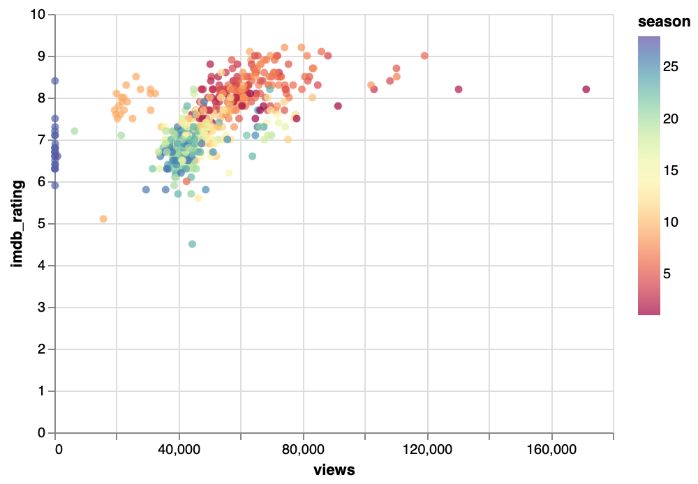

Are newer Simpsons worse?
My argument is that newer Simpons seasons are worse than older ones. I have evidence to back this claim up. I will use empirical data and make a line chart as well as using other qualitative data to explain these results.
mean IMBD rating for the simpsons is 7.4
The main reason that the simpsons is worse now than during the first few seasons is that the show is starting to get repetitive argues the author of this article. They state that they show starts to get bad in season 11, but that it started to become less than great in season 9, which I agree with. I agree that they show does get stale, but unlike this author I think it is due to the lack of quality writers rather than it being entirely the shows fault.
The lack of good writers happened during the seventh season, and coincided with a different type of comedy seen in later seaons. The site zombie simpons details how as writers were starting to leave, so too were reviews becoming lower and lower. The type of layred jokes and comedy the show was known for was starting to die. It also argues that there was a lack of inspiration, but again this is a point I somewhat disagree with.
This blog post from the same website details how the animation was inherenlty funny in the beginning seasons, something that was fundamentally lacking from new seasons. They argue how the character and humor present in something that defines the show, its animation, helps to make it that much better. To show what I mean, here is a graph showing the comparison between seasons by both the number of views, or popularity, and also it IMBD rating.
As you can see the simpons got worse over time. This was due to the leaving of good writers, the worse animation style, and maybe even the lack of ideas. However, one thing is for sure, there will never be a show like it agian.